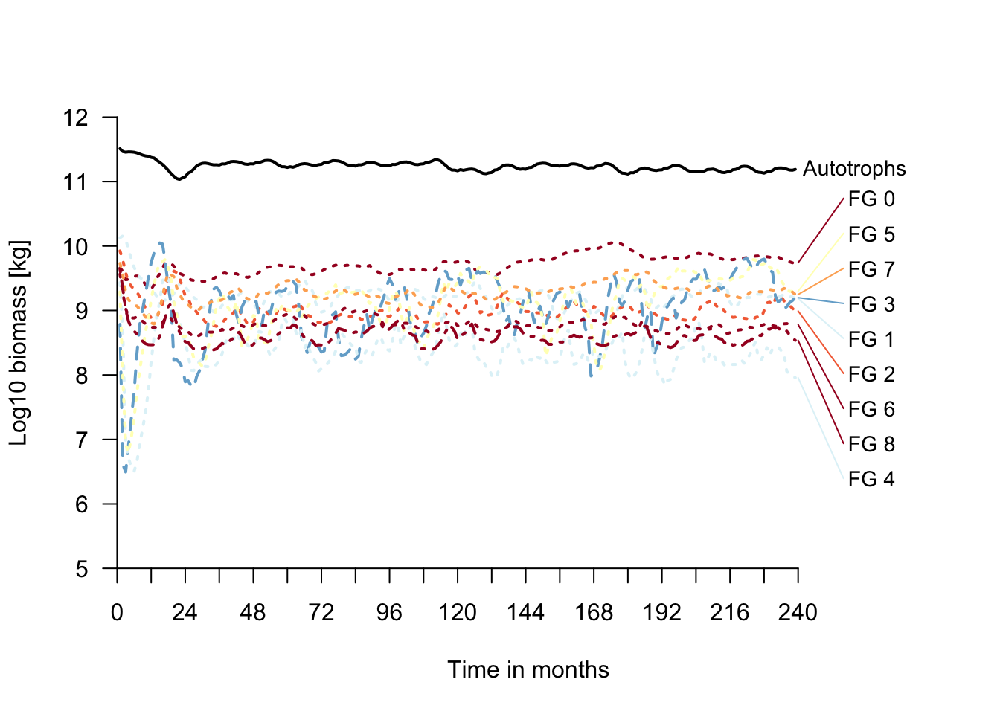

Getting started with MadingleyR
RStudio project
Open the RStudio project that we created in the first session. I recommend to use this RStudio project for the entire course and within the RStudio project create separate R scripts for each session.
- Create a new empty R script by going to the tab “File”, select “New File” and then “R script”
- In the new R script, type
# Session 10: Running MadingleyRand save the file in your folder “scripts” within your project folder, e.g. as “10_Mad_intro.R”
In the remaining three practicals of this course, we are going to
work with the mechanistic general ecosystem model Madingley (Harfoot et al. 2014), and more specifically
with the R package MadingleyR (Hoeks
et al. 2021). Madingley uses a trait-based approach to model the
biomass of photo-autotrophs and heterotrophs and interactions between
these. By that it can simulate the trophic structure of ecosystems from
local to global scale, and the emerging top-down (predator-regulated) or
bottom-up (resource-regulated) forces in the food webs.
MadingleyR is available for the terrestrial realm (Hoeks et al. 2021). The heterotrophs are
simulated using an individual-based approach, the autotrophs are
modelled as stock (total biomass). Heterotrophic organisms are described
within cohorts of identical traits (body mass, age, functional
characteristics). All stocks and cohorts belong to functional groups.
Terrestrial autotroph functional groups are characterised by their leaf
strategy. Terrestrial heterotroph functional groups are characterised by
their feeding mode (herbivores, omnivores, carnivores), their metabolism
(endotherm, ectotherm), and their reproductive strategy (semelparous,
iteroparous) (Harfoot et al. 2014; Hoeks et al.
2020). The rates of feeding, metabolism and dispersal will then
differ between cohorts according to body mass.
1 Introduction to
MadingleyR
This practical is meant as overview of MadingleyR
functionality. It mostly builds on the vignette provided along with the
R package (Hoeks et al. 2021). Thus, all
credits go to Selwyn Hoeks and coauthors.
1.1 Installing
MadingleyR
The package has to be built from the github repo https://github.com/MadingleyR/MadingleyR.
library(devtools)
# Install the MadingleyR package
install_github('MadingleyR/MadingleyR', subdir='Package', build_vignettes = TRUE)One installed, you can load the library as usual, look at the version information or open the accompanying vignette.
# Load MadingleyR package
library('MadingleyR')
# Get version MadingleyR and C++ source code
madingley_version( )##
## MadingleyR -> 1.0.4
## Madingley C++ source -> 2.02# View the MadingleyR tutorial vignette
vignette('MadingleyR')2 MadingleyR
workflow
The MadingleyR workflow is nicely summarised in Fig. 2
of (Hoeks et al. 2021).
2.1 Setting up directory
We set up a directory to store all modelling results. Use your file explorer on your machine, navigate to the “models” folder within your project, and create a sub-folder for the current practical called “Mad_intro”. Next, return to your RStudio project and store the path in a variable. This has to be the absolute path to the models folder.
dirpath = paste0(getwd(),"/models/Mad_intro")2.2 Model initialisation
The madingley_init() generates the cohort and stock data
sets. Per default, the model uses a 1° spatial resolution and a spatial
window ranging from 32° to 35° LON and from -4° to -1° LAT
(corresponding to Serengeti). The initialised data sets contain the
initial distribution and biomass of all heterotroph cohorts (defined by
functional groups and body mass) and autotroph stocks (defined by leaf
strategy), the definitions of the heterophic and autotrophic functional
groups, the spatial window and the spatial resolution (grid size).
# Initialise MadingleyR data with default values
mdata = madingley_init()## Reading default input rasters from: /Library/Frameworks/R.framework/Versions/4.2/Resources/library/MadingleyR/spatial_input_rasters.............
## Processing: realm_classification, land_mask, hanpp, available_water_capacity
## Processing: Ecto_max, Endo_C_max, Endo_H_max, Endo_O_max
## Processing: terrestrial_net_primary_productivity_1-12
## Processing: near-surface_temperature_1-12
## Processing: precipitation_1-12
## Processing: ground_frost_frequency_1-12
## Processing: diurnal_temperature_range_1-12
## # Structure of initialissed data
str(mdata,1)## List of 6
## $ cohorts :'data.frame': 4455 obs. of 16 variables:
## $ stocks :'data.frame': 18 obs. of 3 variables:
## $ cohort_def :'data.frame': 9 obs. of 14 variables:
## $ stock_def :'data.frame': 2 obs. of 10 variables:
## $ spatial_window: num [1:4] 32 35 -4 -1
## $ grid_size : num 1# Initialised spatial window
plot_spatialwindow(mdata$spatial_window)These inputs can also be loaded individually and changed.
# Check potential inputs
madingley_inputs()## possible input arguments are: "spatial inputs"; "cohort definition"; "stock definition"; "model parameters";# Load default inputs for spatial layers
sptl_inp = madingley_inputs("spatial inputs")## Reading default input rasters from: /Library/Frameworks/R.framework/Versions/4.2/Resources/library/MadingleyR/spatial_input_rasters.............# Look at structure of spatial input layers
str(sptl_inp,1)## List of 13
## $ realm_classification :Formal class 'RasterLayer' [package "raster"] with 13 slots
## $ land_mask :Formal class 'RasterLayer' [package "raster"] with 13 slots
## $ hanpp :Formal class 'RasterLayer' [package "raster"] with 13 slots
## $ available_water_capacity :Formal class 'RasterLayer' [package "raster"] with 13 slots
## $ Ecto_max :Formal class 'RasterLayer' [package "raster"] with 13 slots
## $ Endo_C_max :Formal class 'RasterLayer' [package "raster"] with 13 slots
## $ Endo_H_max :Formal class 'RasterLayer' [package "raster"] with 13 slots
## $ Endo_O_max :Formal class 'RasterLayer' [package "raster"] with 13 slots
## $ terrestrial_net_primary_productivity:Formal class 'RasterBrick' [package "raster"] with 13 slots
## $ near-surface_temperature :Formal class 'RasterBrick' [package "raster"] with 13 slots
## $ precipitation :Formal class 'RasterBrick' [package "raster"] with 13 slots
## $ ground_frost_frequency :Formal class 'RasterBrick' [package "raster"] with 13 slots
## $ diurnal_temperature_range :Formal class 'RasterBrick' [package "raster"] with 13 slotsIf you change the input layers, you have to provide these new input layers to the initalisation function. For example, we restrict the maximum size of omnivores to 150 kg by manipulating the the spatial inputs raster layer for this functional group.
# Inspect raster layer for endothermic omnivores
sptl_inp$Endo_O_max## class : RasterLayer
## dimensions : 140, 359, 50260 (nrow, ncol, ncell)
## resolution : 1, 1 (x, y)
## extent : -179, 180, -56, 84 (xmin, xmax, ymin, ymax)
## crs : +proj=longlat +datum=WGS84 +no_defs
## source : Endo_O_max.tif
## names : Endo_O_max
## values : 5.6, 190792.3 (min, max)# Restrict size to 150 kg (150'000 g)
sptl_inp$Endo_O_max[sptl_inp$Endo_O_max>150000] = 150000
# Plot initial body mass distribution of endothermic omnivores
plot(sptl_inp$Endo_O_max)# Reinitialise the model
mdata = madingley_init(spatial_inputs = sptl_inp)## Processing: realm_classification, land_mask, hanpp, available_water_capacity
## Processing: Ecto_max, Endo_C_max, Endo_H_max, Endo_O_max
## Processing: terrestrial_net_primary_productivity_1-12
## Processing: near-surface_temperature_1-12
## Processing: precipitation_1-12
## Processing: ground_frost_frequency_1-12
## Processing: diurnal_temperature_range_1-12
## 2.3 Run the simulation
When all stocks and cohorts are initialised, we can run the
simulation using the madingley_run() function. A typical
spin-up model run should be 100-1000 years. Here, we only simulate 20
years for simplicity. Also, we limit the maximum number of cohorts to
200 to speed up computation. In the runtime information, you will see
that the model simulates the stocks and cohorts in monthly time
steps.
# Run spin-up of 50 years
mres = madingley_run(madingley_data = mdata,
years = 20,
max_cohort = 200,
out_dir=dirpath)
# save model object
save(mres,file=paste0(dirpath,'/mres.RData'))# Look at structure of output data sets
str(mres,1)## List of 10
## $ cohorts :'data.frame': 1780 obs. of 16 variables:
## $ stocks :'data.frame': 18 obs. of 3 variables:
## $ cohort_def :'data.frame': 9 obs. of 14 variables:
## $ stock_def :'data.frame': 2 obs. of 10 variables:
## $ time_line_cohorts:'data.frame': 239 obs. of 11 variables:
## $ time_line_stocks :'data.frame': 239 obs. of 3 variables:
## $ out_dir_name : chr "/madingley_outs_27_05_22_17_43_12/"
## $ spatial_window : num [1:4] 32 35 -4 -1
## $ out_path : chr "/Users/zurell/data/Lehre/UP_Lehre/CLEWS/EcosystemDynamics/edb-course/models/Mad_intro"
## $ grid_size : num 1The structre of the results data sets is largely analogous to the input data sets. The cohorts and stocks data now contain the distribution of biomass within the functional groups and cohorts of the last time step. This way, we can continue simulations by simply starting the model run at this final time step (see next practical). Additionally, we obtain to timeline data sets that hold the biomass of the different heterotroph and autotroph functional groups over time.
2.4 Plot results
The MadingleyR package provides a number of useful
plotting functions, for plotting the biomass time series, the body mass
distributions in the different functional groups, the food web and
trophic pyramids with biomass flows, and the spatial biomass
distribution.
# Plot biomass time series
plot_timelines(mres)
# Plot body mass distributions of heterotroph functional groups
# (note that semelparous and iteroparous ectotherms are pooled together)
plot_densities(mres)## loading inputs from: /Users/zurell/data/Lehre/UP_Lehre/CLEWS/EcosystemDynamics/edb-course/models/Mad_intro/madingley_outs_27_05_22_17_43_12/# Plot trophic pyramid
plot_trophicpyramid(mres)## loading inputs from: /Users/zurell/data/Lehre/UP_Lehre/CLEWS/EcosystemDynamics/edb-course/models/Mad_intro/madingley_outs_27_05_22_17_43_12/
# Plot foodweb plot
plot_foodweb(mres, max_flows = 5)## loading inputs from: /Users/zurell/data/Lehre/UP_Lehre/CLEWS/EcosystemDynamics/edb-course/models/Mad_intro/madingley_outs_27_05_22_17_43_12/# Plot total abundance per grid cell and abundance distribution per functional group
plot_spatialabundances(mres)## loading inputs from: /Users/zurell/data/Lehre/UP_Lehre/CLEWS/EcosystemDynamics/edb-course/models/Mad_intro/madingley_outs_27_05_22_17_43_12/plot_spatialabundances(mres, functional_filter = T)## loading inputs from: /Users/zurell/data/Lehre/UP_Lehre/CLEWS/EcosystemDynamics/edb-course/models/Mad_intro/madingley_outs_27_05_22_17_43_12/# Plot total biomass per grid cell and biomass distribution per functional group
plot_spatialbiomass(mres)## loading inputs from: /Users/zurell/data/Lehre/UP_Lehre/CLEWS/EcosystemDynamics/edb-course/models/Mad_intro/madingley_outs_27_05_22_17_43_12/plot_spatialbiomass(mres, functional_filter = T)## loading inputs from: /Users/zurell/data/Lehre/UP_Lehre/CLEWS/EcosystemDynamics/edb-course/models/Mad_intro/madingley_outs_27_05_22_17_43_12/